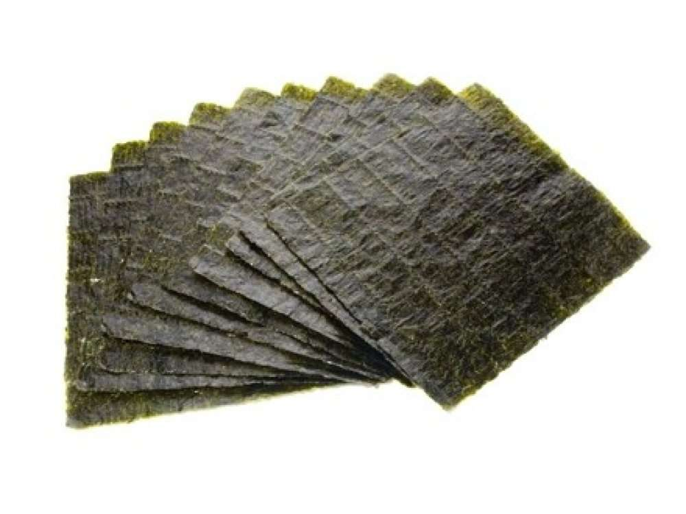
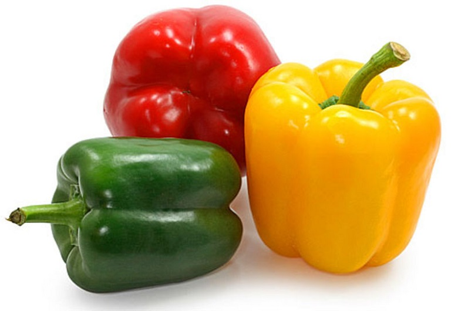
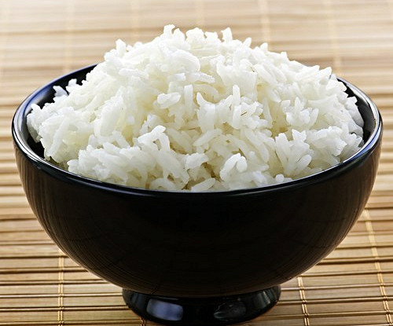
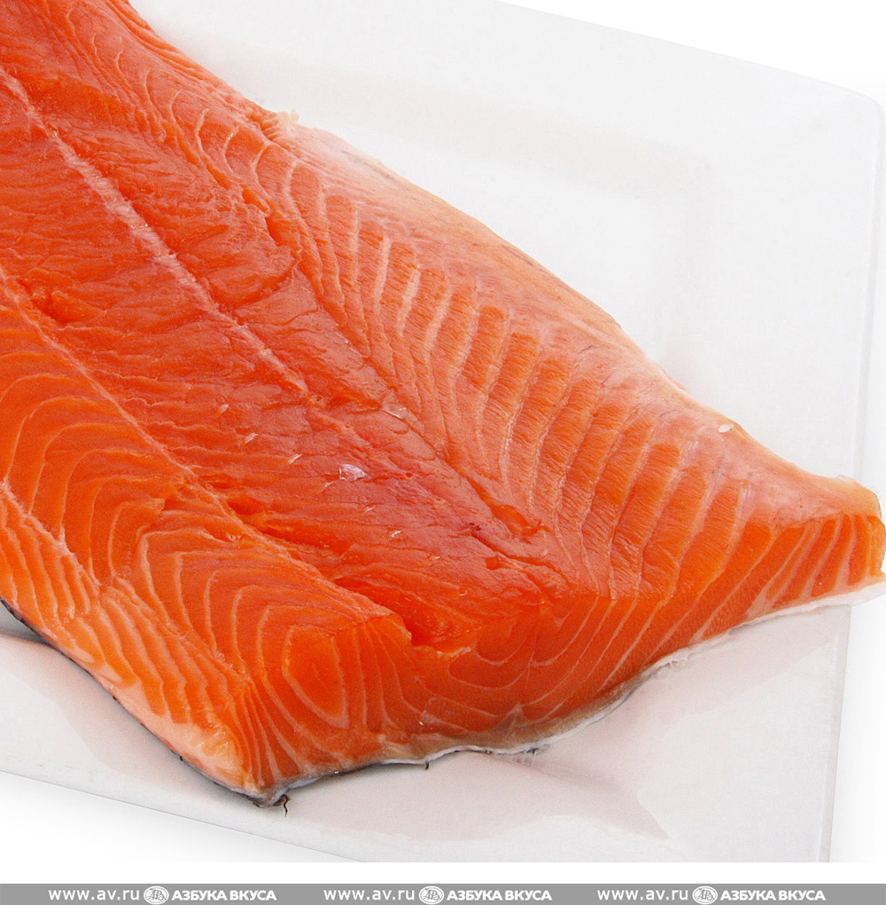
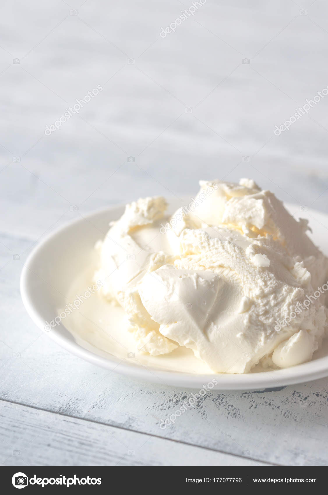
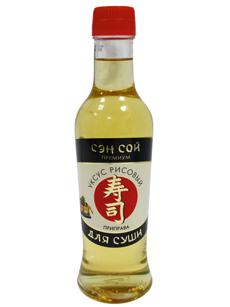

Ингредиенты
| Описание | Никто не сделает за тебя роллы и суши вкуснее, чем ты сама! Ни в одном японском ресторане я не пробовала суши вкуснее, чем домашние. |
| Каллории | 100г - 194 кКал |

Рис

Болгарский перец

Огурцы

Семга

Семга

Рисовый уксус
Способ приготовления
- Для начала варим рис. 400гр риса заливаем 600мл воды и варим по обычной программе в мультиварке
- Когда рис сварится, добавляем в него 50мл рисового уксуса(продается в любом крупном магазине). Если нет рисового уксуса, можно приготовить заправку для риса из сахара, столового уксуса и соли, но сама не пробовала - проще купить, он не так дорого стоит. После добавления уксуса тщательно перемешиваем рис, чтобы он равномерно пропитался нашей заправкой. В заправке - главный секрет риса для суши. После того, как мы перемешали рис, ему надо дать немного остыть
- Раньше я всегда крутила роллы циновкой, но друзья подарили специальный набор - суши мэджик. Теперь пользуюсь только им. Поэтому вместо циновки на коврике устанавливаем лист нори
- Выкладываем рис, но не на всей площади листа - как показано на фото. Чтобы лист нори не топорщился, его сухой конец можно чуть смочить водичкой. Чтобы рис во время готовки не прилипал к рукам, также рекомендую приготовить пиалку с водой - к мокрым рукам рис практически не прилипает и его удобно раскладывать
- Выкладываем начинку на рис. Комбинации из семги, огурца и болгарского перца - на свой вкус. Некоторые добавляют авокадо, но его сложно найти у нас спелым. Я люблю, когда начинки побольше, поэтому обычно кладу всё :) Кстати, огурец лучше использовать без семечек. Так вкуснее
- Скручиваем наш коврик и получаем аккуратненький, ровный рулетик, который остаетс только нарезать
- Чтобы скрутить ролл рисом наружу (например Филадельфию), надо обрезать лист нори, разложить на нем рис и перевернуть его вместе с рисом, а потом выложить начинку. Если вы крутите циновкой, то потребуется пищевая пленка и операция будет несколько сложнее, но от этого получится не менее вкусно :)
- После того как скрутите ролл рисом наружу, его надо будет обернуть в тонко нарезанные ломтики семги (чтобы получить Филадельфию), или обсыпать кунжутом, или украсить икрой тобико
- Из 400гр риса у меня получилось 8 рулетов (один в кадр не попал, т.к. был молниеносно съеден домашними хищниками под предводительством мужа :) ) + из остального риса я сделала 16 нигири суши
- Если хочется разнообразия, с помощью формочек из все того же набора можно приготовить нигири суши. Для этого укладываем в формочку кусочки семги, если хочется поострее, можно добавить чуть-чуть васаби. Если формочек нет, то надо руками слепить рисовые колобки и такие же кусочки уложить на них сверху
- Устанавливаем сверху вторую формочку
- Накладываем в получившиеся отверстия рис
- Снимаем верхнюю форму и переворачиваем оставшуюся конструкцию с рисовыми колобками и семгой на них
- Из 400гр риса у меня получилось 8 порций роллов и 16 нигири суши